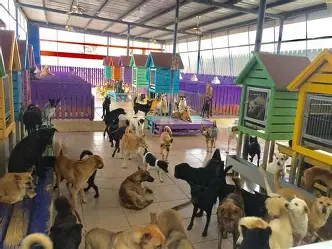
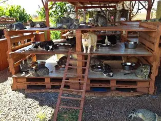

NOSOTROS
¿QUIENES SOMOS?
Somos un refugio de animales sin fines de lucro ubicado en Buenos Aires. Desde 2015 ayudamos a perros y gatos abandonados a encontrar familias que los amen


Nuestra misión
Nuestra misión es reducir el abandono animal promoviendo la adopción responsable, ofreciendo atención veterinaria básica y concientizando a la comunidad sobre el bienestar animal.
Nuestra historia
Todo comenzó cuando rescatamos a "Luna", una perrita herida que hoy tiene un hogar feliz. Desde entonces, supimos que queríamos hacer esto por muchos más animales. Así nació este proyecto, que hoy crece gracias a voluntarios y adoptantes solidarios como vos.
Ubicación
Nos encontramos en Buenos Aires, zona oeste. ¡Las visitas son con cita previa!